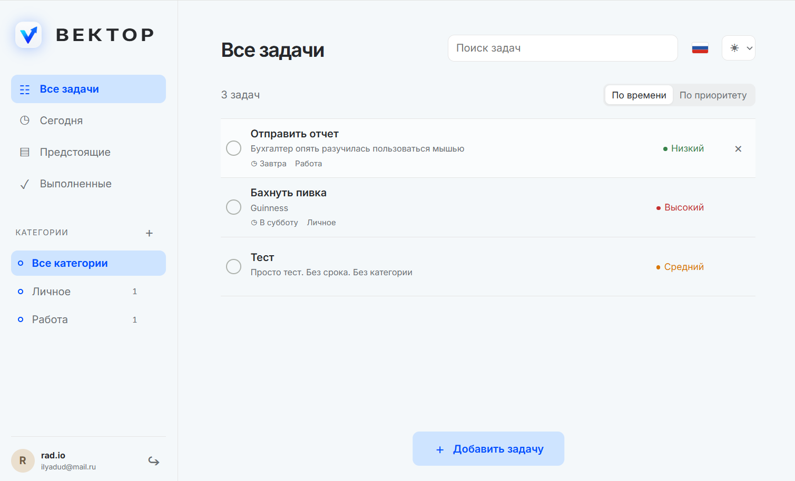

Списки и поиск
Разделы «Сегодня», «Предстоящие», «Все задачи» и «Выполненные», поиск задач и сортировка по времени или приоритету.
Задачи под контролем
«Сегодня», «Предстоящие», «Все задачи» — и ни одна задача не потеряется.
Ведите задачи по категориям, ставьте приоритеты и сроки, отмечайте выполнение и находите нужное поиском. Данные хранятся в локальной базе SQLite.

Списки, категории, приоритеты и сроки — в одном веб-интерфейсе.
Разделы «Сегодня», «Предстоящие», «Все задачи» и «Выполненные», поиск задач и сортировка по времени или приоритету.
Отмечайте важные задачи высоким приоритетом и указывайте срок. Даты показываются по-человечески: «Завтра», «В субботу».
Создавайте свои категории и раскладывайте по ним задачи. Рядом с каждой категорией видно количество задач.
Самостоятельная регистрация и вход с сессией в HttpOnly cookie. Записи изолированы по пользователю, пароли хранятся как Argon2id-хеши.
Светлая и тёмная тема, интерфейс на русском и английском. Выбор сохраняется в браузере, раскладка подстраивается под экран.
По умолчанию всё хранится в файле taskvector.db. Отдельный сервер базы данных не нужен.
Подойдёт для личных задач и небольших рабочих списков, которые удобнее держать на своём сервере.
Готовых сборок пока нет — проект собирается из исходного кода · GitHub
Нужны Go 1.23+ и Node.js 20+. После запуска откройте http://localhost:5173.
cd web
npm install
cd ..
make devСервер раздаёт собранный интерфейс из web/dist.
cd web
npm run build
cd ..
go build -o taskvector.exe ./cmd/taskvectorПроект в активной разработке: PostgreSQL, уведомления, экран профиля и часть требований v1 ещё не реализованы. Интерфейс и API могут меняться.
Путь к базе задаётся переменной TV_DB_DSN, адрес сервера — TV_HTTP_ADDR. Пример конфигурации — config.example.yaml. После изменения Go-кода перезапустите backend: он не перезагружается автоматически.
Как запустить проект для разработки, собрать его на Windows, настроить базу и адрес сервера — в README.
Принятые решения и текущие ограничения описаны в docs/DECISIONS.md.